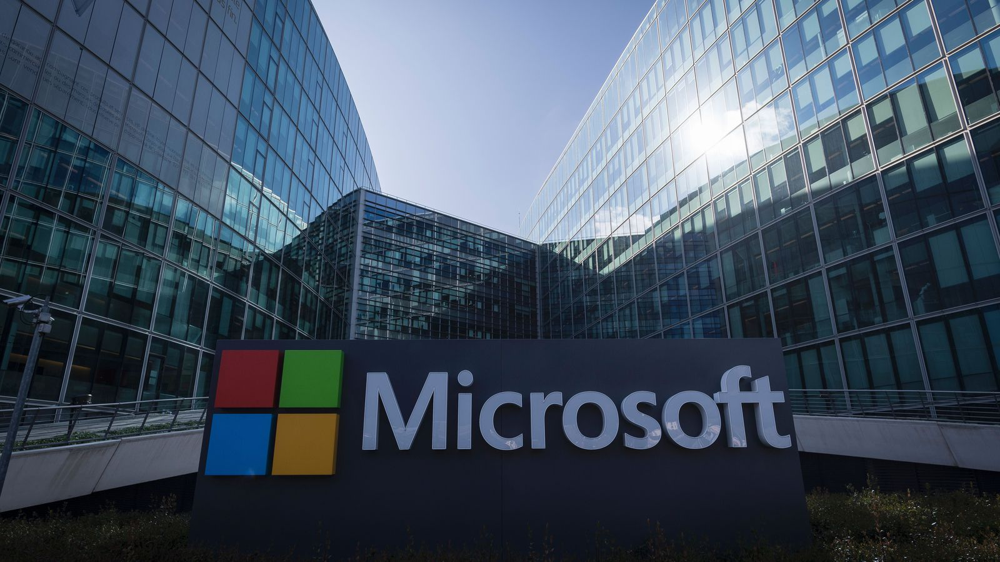
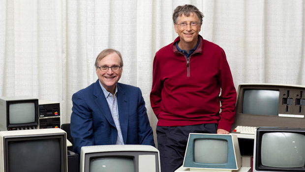

Microsoft je americka multinacionalna korporacija smestena u Redmondu, Washington, koja razvija, proizvodi, licencira, podrzava i prodaje racunarski softver, korisnicku elektroniku, te osobne racunare i servise. Njihov najpoznatiji softver je serija operativnih sistema Microsoft Windows, te uredskih paketa Microsoft Office, kao i internetski preglednici Internet Explorer i Spartan. Njihovi hardverski proizvodi su poznata konzola Xbox i serija tableta Microsoft Surface. Microsoft je najveci proizvodjac softvera ako se u obzir uzme prihod. Takodjer je jedna od svetskih najvriednijih kompanija.

Microsoft su osnovali Bill Gates i Paul Allen 4. aprila 1975. godine za razvoj i prodaju BASIC-a za racunar Altair 8800. Nastojali su dominirati trzistem operativnih sistema za osobne racunare sa MS-DOS-om sredinom 1980-tih, sto je popraceno Microsoft Windowsom. Pocetna javna ponuda kompanije iz 1986. i naknadni rast u njenoj ceni deonica, napravile su tri milijardera i otprilike 12 hiljada milionera medju zaposlenicima Microsofta. Od 1990-tih, Microsoft se znacajno podelio od tržišta operativnih sistema i napravio je više kupovina preduzeca. U maju 2011, Microsoft je preuzeo firmu Skype Technologies za $8,5 milijardi u svojoj najvećoj akviziciji do tada.

Od 2013, Microsoft je dominantan na trzistu operativnih sistema koji su kompatibilni sa IBM PC-em, kao i uredskih softverskih paketa (Microsoft Office). Kompanija takodjer proizvodi sirok spektar drugih softvera za desktope i servere, te je aktivan u područjima internetske pretrage (Bing), industrije video-igara (Xbox, Xbox 360 i Xbox One), digitalnih servisa (MSN), te na trzistu mobilnih telefona (Windows Phone OS). U junu 2012, Microsoft je usao na trziste osobnih racunara po prvi put pokretanjem serije tableta Microsoft Surface.